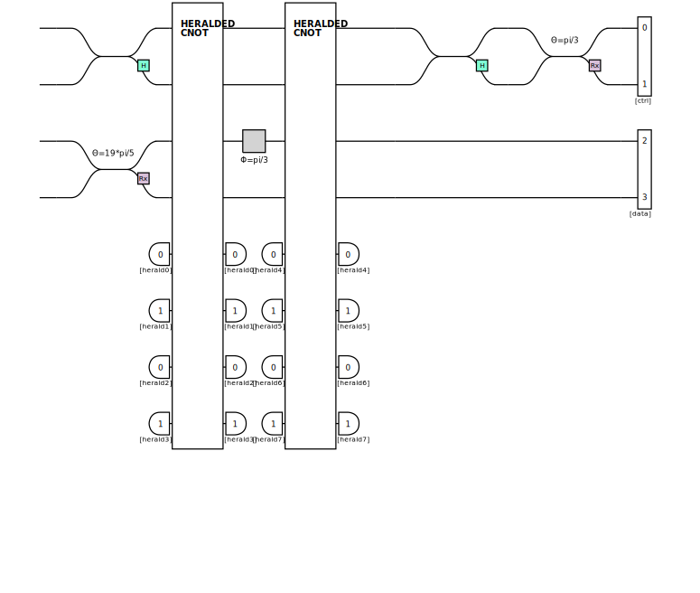
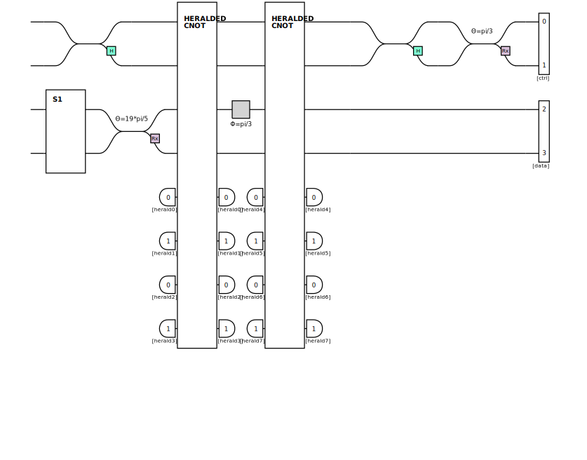
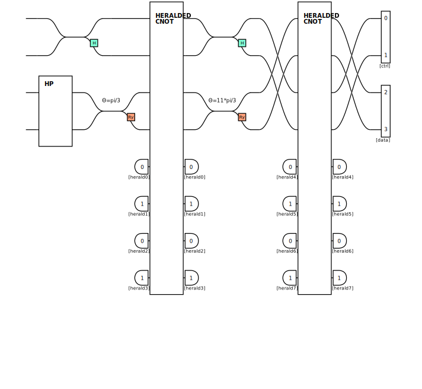
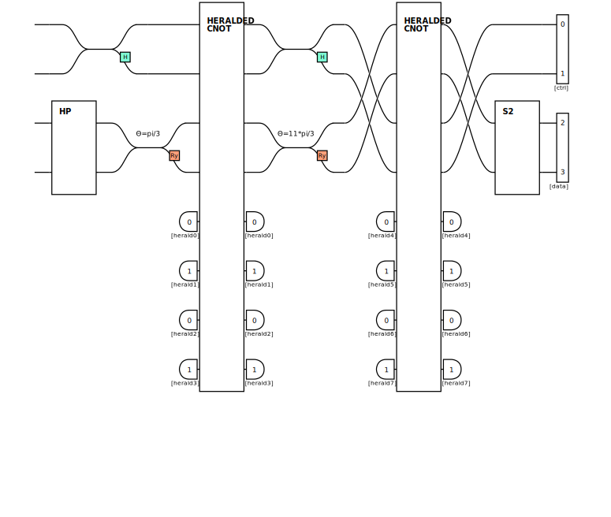

import perceval as pcvl
from perceval import BS, catalog, PERM, Circuit, Processor, pdisplay, PS, BasicState, BackendFactory
from perceval.rendering.circuit import SymbSkin, DisplayConfig
from exqalibur import FockState
import numpy as np
from numpy import pi
from typing import Optional, Dict, List, Tuple
DisplayConfig.select_skin(SymbSkin)Solution Challenge 4: Inversion
1 Before we begin…
qubits = {
"00": BasicState([1, 0, 1, 0]),
}
def measure2p(processor: Processor, input_state: Optional[FockState] = None) -> None:
if input_state is None:
input_state = qubits["00"]
# We enforce the rule: the sum of photons per pair of rails must be equal to 1.
processor.set_postselection(pcvl.utils.PostSelect("[0,1]==1 & [2,3]==1"))
processor.min_detected_photons_filter(0)
# Finally, we take the measurement:
processor.with_input(input_state)
measure2p_s = pcvl.algorithm.Sampler(processor)
print(f"Input: {qubits_[input_state]}")
for k, v in measure2p_s.probs()["results"].items():
print(f"> {qubits_[k]}: {round(v, 2)}")
H = BS.H()
RX = BS.Rx
RY = BS.Ry
CNOT = catalog["klm cnot"].build_processor()
NOT = PERM([1, 0])
HP = Circuit(2, "HP") // H // (1, PS(-pi/2))
q = lambda x: [2*x, 2*x+1]
theta = pi/3
gamma = pi/52 Inversion?
It’s time to finish this dreadful series of challenges. This time, no new concepts. Just two circuits and one goal: add the two missing parts to get the expected results. Good luck… may the odds be in your favor…
step_one = Circuit(2, "S1")
p_step_one = Processor("SLOS", 4)
p_step_one.add(q(0), H)
p_step_one.add(q(1), step_one)
p_step_one.add(q(1), RX(-gamma))
p_step_one.add(q(0) + q(1), CNOT)
p_step_one.add([2], PS(theta))
p_step_one.add(q(0) + q(1), CNOT)
p_step_one.add(q(0), H)
p_step_one.add(q(0), RX(theta))
pdisplay(p_step_one)
print("Expected result: {|1,0,0,1>: 1.0}")
measure2p(p_step_one)[qubits["01"]]On attend : {|1,0,0,1>: 10.09549150281252643Solution Step 1: Static Reverse Engineering
This small exercise was an example of the well-known phenomenon of phase kickback. However, it could be solved simply without calculating the entire circuit. For example, one could see that the second rail had to give a \(|1\rangle\) all the time. Tracing back through the circuit, we notice that before the passage of the two CNOT, the second qubit must necessarily be at \(|1\rangle\), hence the equation: \[ R_x(-\gamma) S_1 |0\rangle = |1\rangle \] Or: \[ R_x(-\gamma) S_1 = X \] This can be solved simply, for example: \[ R_x(-\gamma) R_x(\gamma) X = X \] Hence a possible solution: \[ S_1 = R_x(\gamma)X \] \[ \DeclareMathOperator{\CU}{CU} \]Phase Kickback
The goal of phase kickback is to extract information about the phase of a qubit without measuring it. To do this, consider the following case: we have a unitary matrix \(U\) and a circuit that constructs a controlled version of \(U\) (\(CU\)). If we also have an eigenvector \(|\psi\rangle\) such that: \[ U|\psi\rangle = e^{i\theta}|\psi\rangle \] then we can extract \(\theta\) without directly measuring \(|\psi\rangle\). We start by adding a qubit and forming the circuit: \[ H_{\text{qubit 0}}\circ \CU \circ H_{\text{qubit 0}} \] We then input \(|0\rangle|\psi\rangle\): \[ |0\rangle|\psi\rangle\quad \xrightarrow{H_{\text{qubit 0}}} \quad \frac{1}{\sqrt{2}} \left(|0\rangle|\psi\rangle + |1\rangle|\psi\rangle\right) \] \[ \xrightarrow{\CU} \quad \frac{1}{\sqrt{2}} \left(|0\rangle|\psi\rangle + |1\rangle e^{i\theta}|\psi\rangle\right) \] \[ \xrightarrow{H_{\text{qubit 0}}} \quad \frac{1}{\sqrt{2}}\left(\frac{|0\rangle+|1\rangle}{\sqrt{2}}|\psi\rangle + e^{i\theta}\frac{|0\rangle -|1\rangle}{\sqrt{2}}|\psi\rangle\right) = \left(\frac{1+e^{i\theta}}{2}|0\rangle+ \frac{1- e^{i\theta}}{2}|1\rangle\right)|\psi\rangle = \left(\cos \frac{\theta}{2}~|0\rangle + \sin\frac{\theta}{2}~|1\rangle\right)|\psi\rangle \] By measuring the first qubit, we obtain \(|0\rangle\) with a probability of: \[ \Pr(|0\rangle)=\left|\cos\frac{\theta}{2}\right|^2 \] This allows us to extract information about \(\theta\).
step_one = Circuit(2, "S1") // NOT // RX(gamma)
p_step_one = Processor("SLOS", 4)
p_step_one.add(q(0), H)
p_step_one.add(q(1), step_one)
p_step_one.add(q(1), RX(-gamma))
p_step_one.add(q(0) + q(1), CNOT)
p_step_one.add([2], PS(theta))
p_step_one.add(q(0) + q(1), CNOT)
p_step_one.add(q(0), H)
p_step_one.add(q(0), RX(theta))
pdisplay(p_step_one)
measure2p(p_step_one)[qubits["01"]]1.0# step_two = Circuit(2, "S2") // RX(-pi/2)
step_two = Circuit(2, "S2")
p_step_two = Processor("SLOS", 4)
p_step_two.add(q(0), H)
p_step_two.add(q(1), HP)
p_step_two.add(q(1), RY(theta))
p_step_two.add(q(0) + q(1), CNOT)
p_step_two.add(q(1), RY(-theta))
p_step_two.add(q(0), H)
p_step_two.add(q(1) + q(0), CNOT)
p_step_two.add(q(1), step_two)
pdisplay(p_step_two)
print("Expected result: {|1,0,0,1>: 0.93, |0,1,0,1>: 0.07})")
measure2p(p_step_two, input_state=qubits["00"])On attend : {|1,0,0,1>: 0.93, |0,1,0,1>: 0.07})BSDistribution(float,
{|1,0,1,0>: 0.4665063509461102,
|1,0,0,1>: 0.4665063509461095,
|0,1,1,0>: 0.03349364905389023,
|0,1,0,1>: 0.03349364905389023})Solution Step 2: Dynamic Reverse Engineering
A somewhat dubious solution aims to look not at the circuit, but only at the proposed measurement. By keeping the identity in place of \(S_2\) we obtain the following distribution: \[ |1,0,1,0\rangle: 0.46 \] \[ |1,0,0,1\rangle: 0.46 \] \[ |0,1,1,0\rangle: 0.03 \] \[ |0,1,0,1\rangle: 0.03 \] We can deduce that the output \(|\psi\rangle\) is of the form: \[ |\psi\rangle = \left(\alpha |0\rangle + \beta |1\rangle \right)\otimes \left(\gamma |0\rangle + \delta |1\rangle \right) \] with: \[ |\gamma| = |\delta| \] We are therefore at the equator on the Bloch sphere. The objective then becomes simple: how to move from our position on the equator to the south pole (second qubit always at \(|1\rangle\))?
If we are on the X axis or the Y axis, it is sufficient to make a rotation of \(\pm \pi/2\) in the concerned axis. Otherwise, we can try to get there with a rotation on \(Z\).
First trying the easy case, we have 4 options: \[ R_x(\pi/2), \quad R_x(-\pi/2), \quad R_y(\pi/2), \quad R_y(-\pi/2) \] The option \(R_x(-\pi/2)\) works, we win!
Notes on Dynamic Reverse Engineering
Dynamic reverse engineering seems interesting at first glance: it allows you to understand the operation of a program at any moment, without having to understand the entire circuit. However, quantum physics imposes a great constraint: measurement. If we cut the circuit in half, we cannot recover the intermediate state \(|\psi_i\rangle\), we can only measure it. We do not have access to the entirety of the information. In the case of this challenge, we assume that the intermediate state just before our gate \(S_2\) is on the equator, but we have an unknown degree of freedom: the rotation around \(Z\), and we are in an easy case!
step_two = Circuit(2, "S2") // RX(-pi/2)
p_step_two = Processor("SLOS", 4)
p_step_two.add(q(0), H)
p_step_two.add(q(1), HP)
p_step_two.add(q(1), RY(theta))
p_step_two.add(q(0) + q(1), CNOT)
p_step_two.add(q(1), RY(-theta))
p_step_two.add(q(0), H)
p_step_two.add(q(1) + q(0), CNOT)
p_step_two.add(q(1), step_two)
pdisplay(p_step_two)
print("Expected result: {|1,0,0,1>: 0.93, |0,1,0,1>: 0.07})")
measure2p(p_step_two, input_state=qubits["00"])On attend : {|1,0,0,1>: 0.93, |0,1,0,1>: 0.07})BSDistribution(float,
{|1,0,0,1>: 0.9330127018922195, |0,1,0,1>: 0.06698729810778041})General Solution for Steps 1 and 2
To reliably solve both steps without having to question the process, it is entirely possible to use equations. It suffices to recreate the circuit in the form of a unitary matrix (as a reminder, any quantum circuit can be written as a unitary matrix, which is the product of the matrices of the different elements). Then multiply this matrix by the input qubit to obtain the output. We then have several equations, which are sufficient to find a solution.
Here is an implementation with Sage for the first step:
a, b, c, d = var('a b c d')
A = matrix([[a, b], [c, d]])
H = sqrt(2) / 2 * matrix([[1, 1], [1, -1]])
Id = identity_matrix(2)
CNOT = matrix([[1, 0, 0, 0], [0, 1, 0, 0], [0, 0, 0, 1], [0, 0, 1, 0]])
NOT = matrix([[0, 1], [1, 0]])
def PS(place, theta):
if place == 0:
return matrix([[e^(theta * I), 0], [0, 1]])
else:
return matrix([[1, 0], [0, e^(theta * I)]])
def Ry(theta):
return matrix([[cos(theta/2), -sin(theta/2)], [sin(theta/2), cos(theta/2)]])
def Rx(theta):
return matrix([[cos(theta/2), sin(theta/2)*I], [sin(theta/2)*I, cos(theta/2)]])
def is_unitary(matrix):
conj_transpose = matrix.conjugate_transpose()
return matrix * conj_transpose == identity_matrix(matrix.nrows())
gamma = pi/5
theta = pi/3
qubits = {
"0": matrix([[1], [0]]),
"1": matrix([[0], [1]]),
"00": matrix([[1], [0], [0], [0]]),
"10": matrix([[0], [1], [0], [0]]),
"01": matrix([[0], [0], [1], [0]]),
"11": matrix([[0], [0], [0], [1]])
}
solution_ = Rx(gamma) * NOT
C1 = H.tensor_product(Rx(-gamma) * A)
C2 = CNOT * Id.tensor_product(PS(0, theta)) * CNOT
C3 = (Rx(theta) * H).tensor_product(Id)
C = (C3 * C2 * C1 * qubits["00"]).simplify_full()
eq1 = C[0][0] == 0
eq2 = C[2][0] == 0
eq3 = C[1][0].norm() == 1
solutions = solve([eq1, eq2, eq3], [a, c])
show(solutions)3 Flag recovery
import requests as rq
def circuit_to_list(circuit: Circuit) -> List[List[Tuple[float, float]]]:
return [[(x.real, x.imag) for x in l] for l in np.array(circuit.compute_unitary())]
d = {
"step_one": circuit_to_list(step_one),
"step_two": circuit_to_list(step_two),
}
URL = ...
# URL = "http://localhost:8000"
# URL = "https://perceval.challenges.404ctf.fr"
rq.get(URL + "/healthcheck").json()rq.post(URL + "/challenges/4", json=d).json()